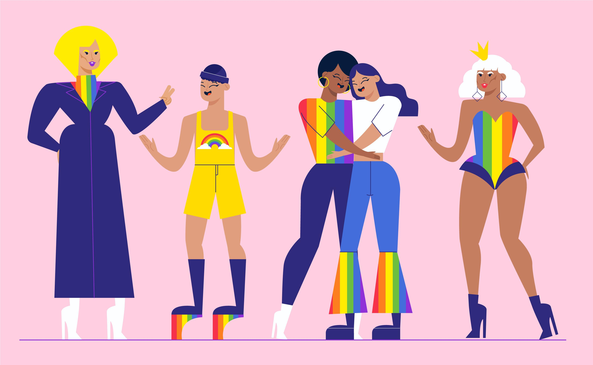

Das ist mein neuer Blog zum Thema Queerness bzw. Gayness und linke Politik.Ich hoffe er gefällt euch und viel Spaß!
Hi ich bin's Nico! Ich bin ein Jugendlicher aus der Oberstufe eines Gymnasiums in BW und ich bin Schwul. Ich werde hier ein bisschen über meinen Alltag reden und die Schwierigkeiten (und Upsides) von Gayness aufzeigen. Außerdem werde ich euch ein bisschen Einblick in meine Einschätzung der aktuellen Politik geben.(Vorsicht bin links!)
Ich habe früher in der Grundschule die "typische" Alibifreundin gehabt und mich damit auch selber überzeugt, dass ich straight af bin. War ich und bin ich allerdings nicht. Als ich dann in der 5ten Klasse von einem guten Freund "Filmchen" gezeigt bekommen habe, habe ich gemerkt, dass ich alles außer straight bin. Zunächst wollte ich es mir nicht eingestehen, aber irgendwann habe ich einen Crush auf einen Jungen bekommen und hab gemerkt, dass ich nicht straight sein kann, weil ich das noch nie für ein Mädchen gefühlt habe. Somit habe ich mich auch Schritt für Schritt angefangen zu outen. Mit diesem Prozess, also dem des aufwachsens veränderte sich allerdings auch meine politische Ausrichtung. Früher hatte ich eine eher CDU-(S)PD gerichtete Meinung. Aber mit jeder schlechten Äußerung gegen mich oder gegen andere soziale Dinge hat sich meine Meinung weiter nach links verschoben, da mir die Menschlichkeit fehlte. Deswegen bin ich jetzt Mitglied der Linken.
Aktuell haben wir eine Regierung aus der Union und der SPD. Die Union bzw. deren Mitglieder haben einige für queere relevante Aussagen getroffen. Friedrich Merz traf z.B. die Aussage von Friedrich Merz: "Solange sich das im Rahmen der Gesetze bewegt und solange es nicht Kinder betrifft – an der Stelle ist für mich allerdings eine absolute Grenze erreicht –, ist das kein Thema für die öffentliche Diskussion.". Und ja auch ich hacke weiterhin auf der Abstimmung für Vergewaltigug in der Ehe usw. herum. Ich finde eine solche Regierung gerade für queere Menschen und Frauen total untragbar und inakzeptabel. Von dem Fall der Brandmauer gar nicht erst zu sprechen. Die (S)PD ist auch nicht unbedingt besser. Diese hat auch der Abschiebung zugestimmt und kümmert sich allgemein realtiv wenig um die Punkte ihres Wahlversprechens.
Julia Klöckner äußerte sich am 28.06.2025 gegen die Regenbogenflagge auf dem Berliner Reichstag beim Christopher Street Day, da die Flagge nicht "neutral" sei. Eigentlich wollte ich mich da jetzt einmal heraushalten, weswegen das auch erst jetzt so spät kommt, aber ich kann es dann doch nicht lassen. Die Aussage die Regenbogenflagge sei nicht neutral sei ist nämlich absoluter Blödsinn. Die Regenbogenflagge steht neben dem Symbol für Frieden nun mal eben auch für Vielfalt. Aber nicht auschließlich für LGBTQIA+. Und mal abgesehen davon ist der Minderheitenschutz auch nicht unbedingt gerade Parteiergreifend, da sie nur alle Menschen von den Menschenrechten geschützt sehen will. Dazu zählen eben auch BIPoC,FLINTA* und alle queere Menschen. Ich meine willst du, der Leser nicht genau so in Frieden leben wie ich, mein Freund und alle anderen Menschen mit Minderheitszugehörigkeit? Die Menschenrechte heißen mit Absicht Menschenrechte und nicht "Arierrechte" oder "Die Rechte der Bluts-Deutschen" oder so ähnlich. Ich finde die Menschenrechte sollten weiterhin geschützt werden. Und so ein kleines Symbol wie eine Regenbogenflagge, welche keinem Menschen da draußen irgendwie Schaden zufügt, sollten dringendst weiter ein Symbol für die Menschlichkeit und die Menschenrechte stehen und zur Not auch dafür kämpfen. Mal abgesehen davon wenn man von völliger Neutralität reden würde müsste man eigentlich eine weiße Flagge ohne Aufdruck auf dem Reichstag hissen. Die Deutschlandflagge und die EU-Flagge sind auch nicht neutral und waren es noch nie. Die Deutschlandflagge z.B. war früher eine Flagge der Revolution und wird heute ähnlich wie die Reichsflagge auch viel von Rechtsextremen als Symbol des Patriotismus und der Rechtsextremität genutzt. Also Frau Klöckner, sie wollen Neutralität? Hissen sie eine weiße Flagge auf dem Reichstag und nehmen die anderen Flaggen hinunter und schon haben sie ihre allseits geliebte Neutralität. Du als Leser solltest die Augen aufmachen und sehen was für einen Unsinn unsere aktuelle Regierun so fabriziert und welche Auswirkungen dies auf die Queere Community haben könnte.